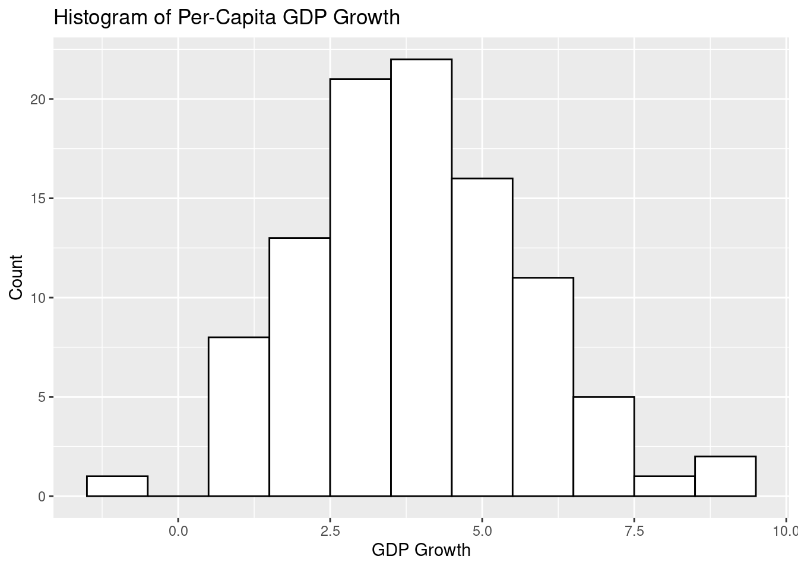
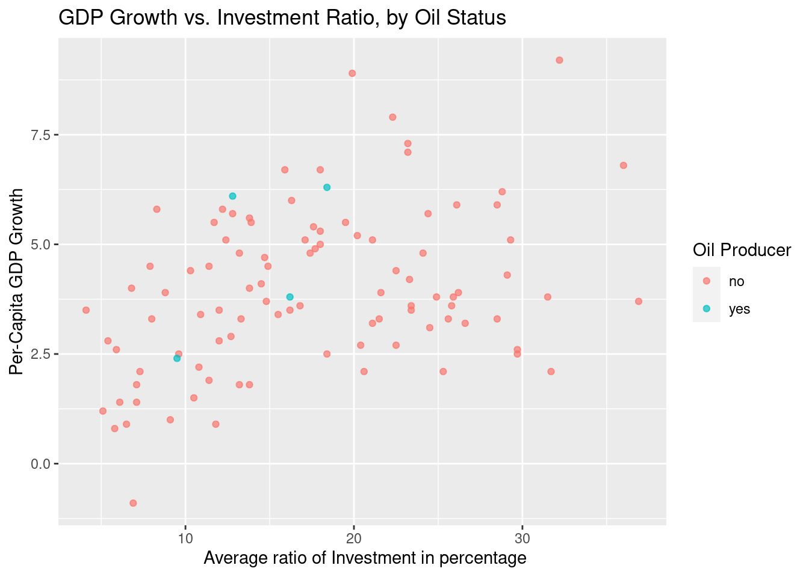

Answer: The GrowthDJ dataset is a cross-country growth‐regression sample compiled by Durlauf & Johnson (1995). It contains 121 observations on 10 variables, covering the period 1960–1985.
3. What is the source of your data set? Include a link to where you got it here.
Note. If you would like to collect survey data from classmates or peers via a Google form, please let me know right away so we can set this up for you. In the meantime, create the Google Form and decide what information you want to collect.
The following questions allow us to determine if your proposed data set meets the project criterion:
rownames oil inter oecd gdp60 gdp85 gdpgrowth popgrowth invest school
1 1 no yes no 2485 4371 4.8 2.6 24.1 4.5
2 2 no no no 1588 1171 0.8 2.1 5.8 1.8
3 3 no no no 1116 1071 2.2 2.4 10.8 1.8
4 4 no yes no 959 3671 8.6 3.2 28.3 2.9
5 5 no no no 529 857 2.9 0.9 12.7 0.4
6 6 no no no 755 663 1.2 1.7 5.1 0.4
literacy60
1 10
2 5
3 5
4 NA
5 2
6 14
nrow(df)
[1] 121
ncol(df)
[1] 11
# df after cleaningdf_clean <-na.omit(df)head(df_clean)
rownames oil inter oecd gdp60 gdp85 gdpgrowth popgrowth invest school
1 1 no yes no 2485 4371 4.8 2.6 24.1 4.5
2 2 no no no 1588 1171 0.8 2.1 5.8 1.8
3 3 no no no 1116 1071 2.2 2.4 10.8 1.8
5 5 no no no 529 857 2.9 0.9 12.7 0.4
6 6 no no no 755 663 1.2 1.7 5.1 0.4
7 7 no yes no 889 2190 5.7 2.1 12.8 3.4
literacy60
1 10
2 5
3 5
5 2
6 14
7 19
nrow(df_clean)
[1] 100
ncol(df_clean)
[1] 11
5. How many rows does your data set have? There should be at least 30 rows.
Answer: My dataset had 121 rows initially but after cleaning and dropping the empty rows, now it has 100 rows and 11 columns including rownames.
6. How many quantitative variables are in your data set? There should be at least 3. List them here and briefly describe what they represent and their units.
If there are more than (say) 5 quantitative variables in your data set, you only need to list the ones you would like to consider. You can of course decide to consider other variables later; your choices in the checkpoints are not binding.
Answer: There are 8 quantitative variables and I considered choosing 4 of them as of right now. Key details:
gdpgrowth (numerical)
Average growth rate of per capita GDP from 1960 to 1985 (in percent).
popgrowth (numerical)
Average growth rate of working-age population 1960 to 1985 (in percent).
invest (numerical)
Average ratio of investment (including Government Investment) to GDP from 1960 to 1985 (in percent).
school (numerical)
Average fraction of working-age population enrolled in secondary school from 1960 to 1985 (in percent).
7. How many categorical variables does your data set have? There should be at least 1. List the categorical variable(s) here along with their corresponding categories.
If there are more than (say) 3 categorical variables in your data set, you only need to list the ones you would like to consider. You can of course decide to consider other variables later; your choices in the checkpoints are not binding.
There are 3 categorical variables and I considered choosing 2 of them as of right now. Key details:
oil (categorical)
Factor. Is the country an oil-producing country?
oecd (categorical)
Factor. Is the country a member of the OECD?
Checkpoint 2
1. What variables in your data set are you interested in? Are they quantitative or categorical? If quantitative, provide the units. If categorical, list or describe the categories.
I am interested in seeing if the oil producing status of a country will affect the per capita gdp growth of that country. For this I am interested in oil variable which has two category “yes” and “no” (categorical variable), gdpgrowth (numerical variable), school (numerical variable) and invest (numerical variable) to also see if school or investment can also confound the gdp growth of a country even if the country produces an oil?
2. What does one observational unit (row) represent in your data set?
Each row in my data set corresponds to a single “country‐year” observation—that is, one country in one specific year.
3. How was the sample obtained? If you can find what the sampling method was, include that information. Also include what year the data was collected
a. If any of this information isn’t available, state that.
The GrowthDJ dataset covers 121 countries for which Penn World Table 4.0 and World Bank (World Development Report) data were available, averaged over 1960–1985. Sampling method has not been explicitly stated in the data set.
b. How did you access the data? (Include a hyperlink, and the date + time you most recently accessed the data.)
4. Do your quantitative variables have the correct types (e.g., double for decimals, integer for whole numbers, etc.). If not, set them to be the correct type. You can check the type of a variable using the class() function.
class(df_clean$gdpgrowth)
[1] "numeric"
class(df_clean$invest)
[1] "numeric"
class(df_clean$school)
[1] "numeric"
All my quantitative variables have the correct types.
5. Do your categorical variables have the type factor? If not, give them this type to tell R that they are categorical.
class(df_clean$oil)
[1] "character"
df_clean$oil <-as.factor(df_clean$oil)
6. Are there any missing values for your variables listed in (9)? If so, filter them out. Note: Some data sets use empty strings “” to denote missing values, so check for these as well.
7. How many observational units (rows) do you have after the previous step?
There are 100 observational units (rows) after cleaning the data set.
8. Does the source of data say that certain data points are missing? (For example, in NHANES we are told that the variable Height is measured only for participants aged 2 years or older, meaning Height will have NA values in rows corresponding to participants under 2.) If not available in the data description, why do you think some data points are missing? Is the mechanism for missingness completely random, or could there be something systematic which leads to greater rates of missingness? It’s okay if you’re not sure how to answer this question — just do your best to think about it.
The GrowthDJ data don’t specify this rule, so any NAs (e.g. in school, literacy60 or invest) likely reflect gaps in historical reporting especially for low-income or non-OECD countries with weaker statistical systems.
9. Provide any numerical summaries that are relevant to your research question. These are highly dependent on your question, but some ideas are:
For one quantitative variable, some relevant numerical summaries involve:
a. One measure of center (e.g., mean, median);
summary(df_clean$gdpgrowth)
Min. 1st Qu. Median Mean 3rd Qu. Max.
-0.900 2.700 3.800 3.973 5.125 9.200
b. One measure of spread (e.g., standard deviation, variance, IQR, a minimum/maximum);
sd(df_clean$gdpgrowth)
[1] 1.81547
c. An overall count (how many observations do you have?)
nrow(df_clean)
[1] 100
For one categorical variable, a relevant numerical summary might be:
a. the # of observations in each category (i.e., use count());
table(df_clean$oil)
no yes
96 4
b. the proportion (or percentage) of observations in each category.
prop <-prop.table(table(df_clean$oil))prop
no yes
0.96 0.04
10. Provide any visualizations that are relevant to your research question. Chapter 2 in this online text is a good resource for creating different plots.
The choice of visualization can be highly dependent on your question, but some ideas are:
a. A visual summary of your (quantitative) outcome of interest:
i. Examples: a density plot, a box plot, a histogram, a relative frequency histogram, etc.
ggplot(df_clean, aes(x = gdpgrowth)) +geom_histogram(binwidth =1, fill ="white", color ="black") +labs(title ="Histogram of Per-Capita GDP Growth", x ="GDP Growth", y ="Count")

b. A visual summary of your predictor(s) of interest:
i. For one categorical predictor, you could do a bar chart, mosaic plot, etc.
c. A visual summary of the relationship between one quantitative variable and one or more different variables:
i. Ideas: scatter plots (maybe with points colored by a category of some categorical variable), side-by-side histograms, side-by-side box plots, side-by-side histograms, overlaid density plots, etc.
ggplot(df_clean, aes(x = invest, y = gdpgrowth, color = oil)) +geom_point(alpha =0.7) +labs(title ="GDP Growth vs. Investment Ratio, by Oil Status",x=" Average ratio of Investment in percentage",y ="Per-Capita GDP Growth",color ="Oil Producer")

ggplot(df_clean, aes(x = gdpgrowth, color = oil)) +geom_density(size =1) +labs(title ="Density of GDP Growth by Oil Status",x ="Per-Capita GDP Growth",y ="Density")
Warning: Using `size` aesthetic for lines was deprecated in ggplot2 3.4.0.
ℹ Please use `linewidth` instead.